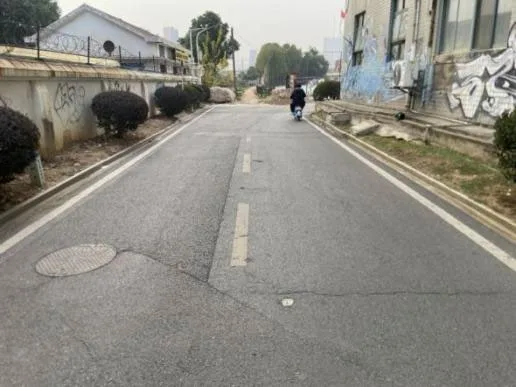
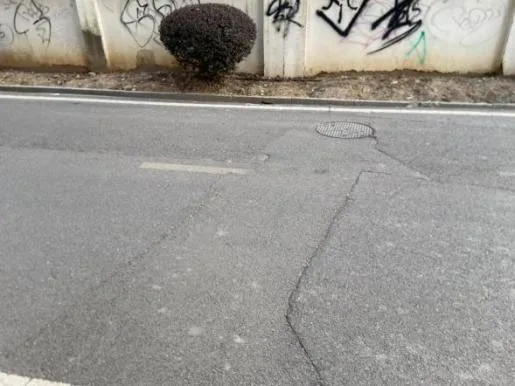
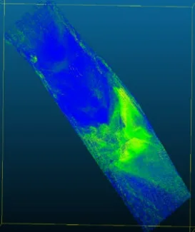
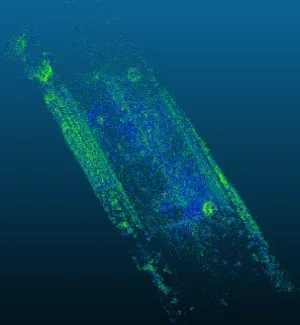
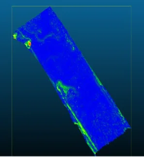

Comparative evaluation of photogrammetric reconstruction methods and 3D Gaussian Splatting for road surface roughness analysis
摘要
Image-based 3D reconstruction offers a low-cost alternative to traditional sensor-based techniques for road surface assessment. This study compares four reconstruction pipelines--COLMAP, Meshroom, Metashape, and 3D Gaussian Splatting (3DGS)--to evaluate their ability to estimate road surface roughness from smartphone imagery. All point clouds were processed in CloudCompare using a consistent workflow involving orientation alignment, segmentation, normal estimation, and roughness computation at neighborhood radiuses of 0.2, 0.4, and 0.6 model units. The results show that COLMAP provides the highest sensitivity to micro-texture, while Meshroom yields balanced reconstructions with moderate roughness variation. Metashape produces the smoothest geometry due to its internal filtering, and 3DGS captures visible irregularities but exhibits higher noise and lower density. The comparison demonstrates that open-source pipelines are viable for relative roughness evaluation, offering a practical approach for low-cost pavement monitoring.
中文解读摘录
- 日期：2026-05-28
- 链接：abs / PDF
- 作者简写：M. Elmegdar, T. Xiao
- 标签：三维重建 / photogrammetry / 3DGS / 道路表面检测
- 背景/动机：道路粗糙度评估通常依赖专用传感器；低成本 smartphone imagery + 图像式三维重建有潜力用于巡检，但不同重建管线对微纹理和几何噪声的影响需要量化。
- 主要创新点/工作：比较 COLMAP、Meshroom、Metashape 与 3DGS 四类重建流程；统一在 CloudCompare 中做姿态/方向对齐、分割、法线估计，并在不同邻域半径下计算 roughness。
- 为什么值得关注：它不是新算法，但给出了三维重建方法在道路/路面计量任务中的实用对照：COLMAP 对微纹理更敏感，Metashape 更平滑，3DGS 可捕捉可见不规则但噪声和密度问题更明显；对移动测量、车载视觉建图和基础设施检测有参考价值。
图表/页面预览

{kind=link}

{kind=link}

{kind=link}

{kind=link}

{kind=link}
